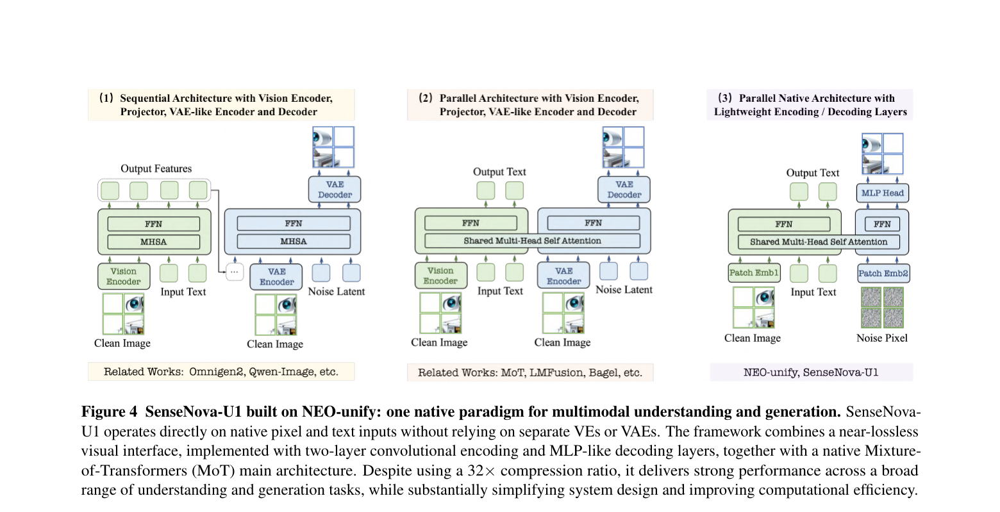
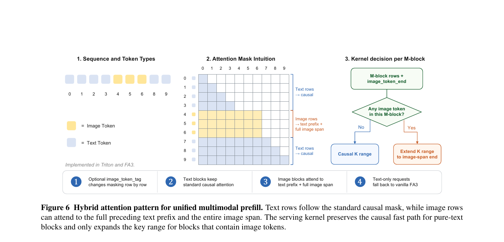
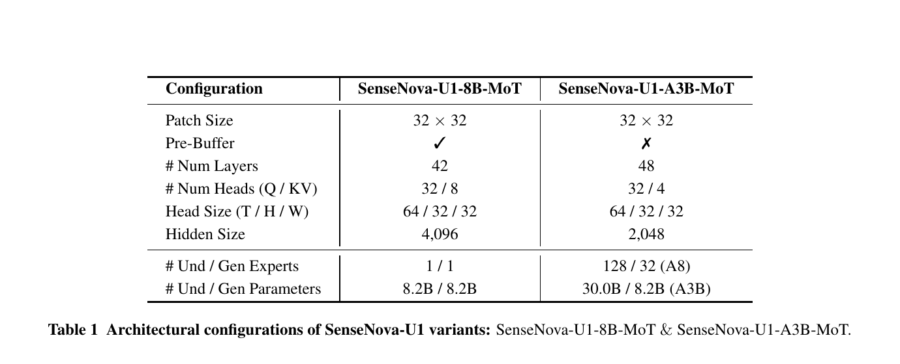
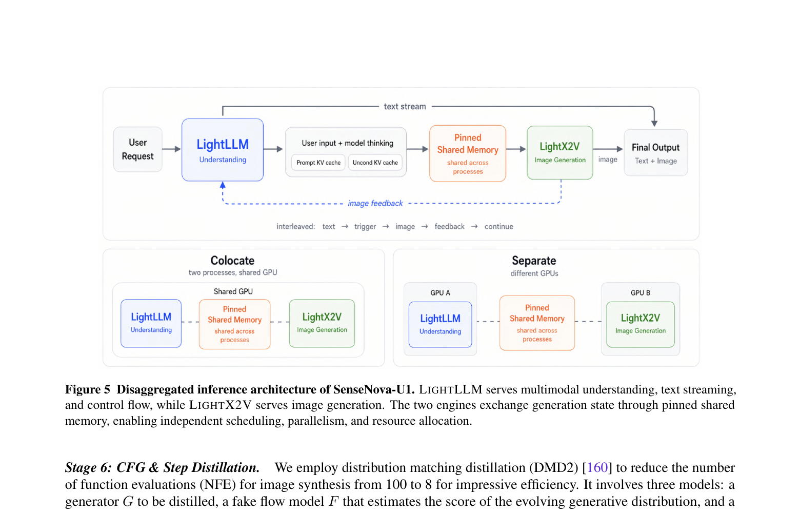
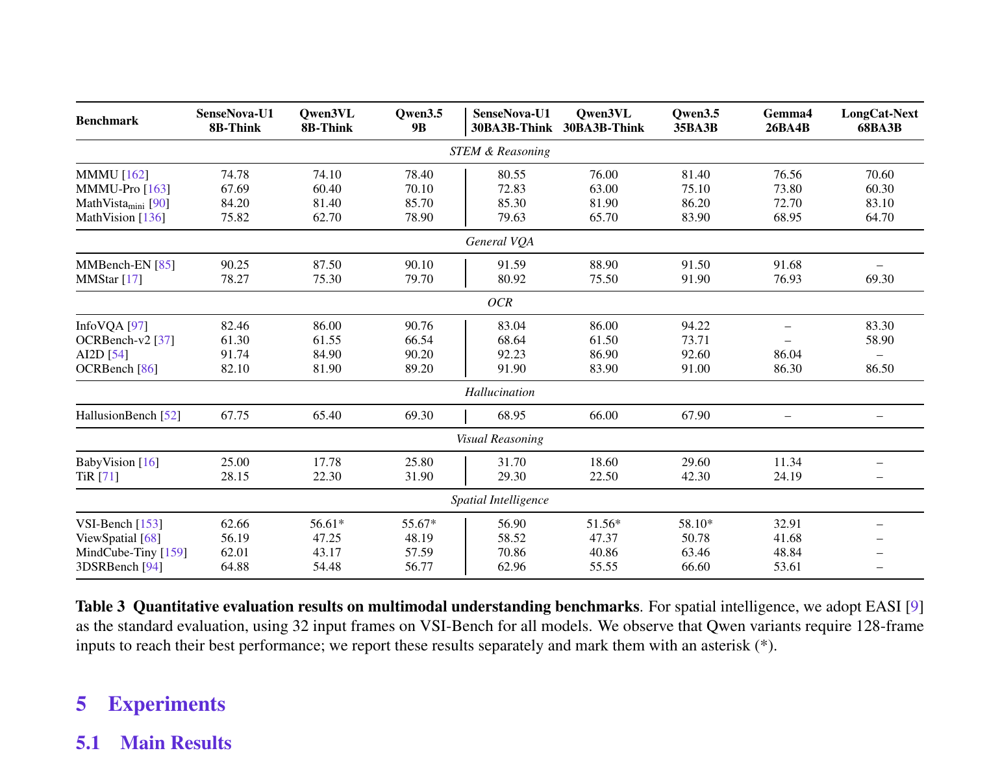
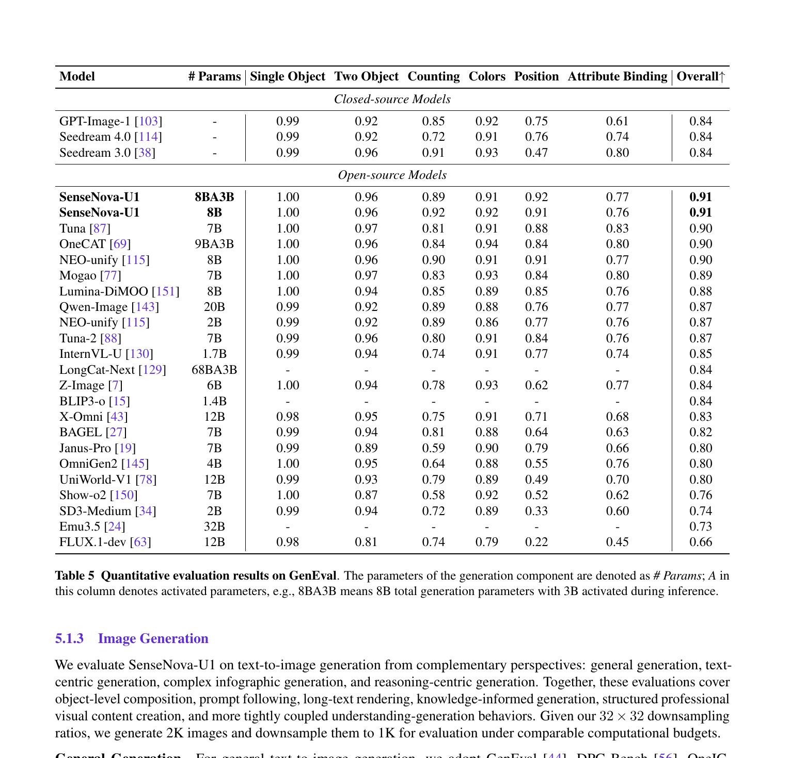
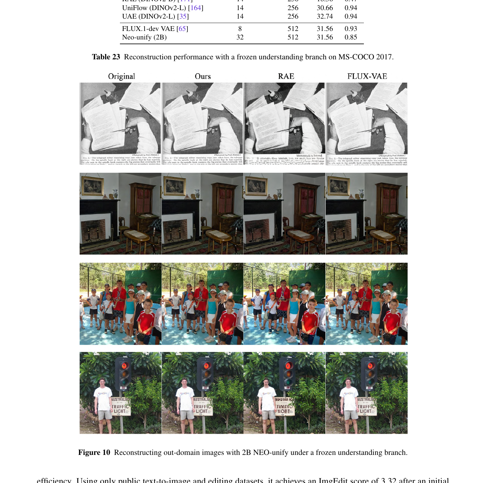

SenseNova-U1: Unifying Multimodal Understanding and Generation with NEO-unify Architecture
1. 出发点 (Motivation)
过去几年 VLM (视觉语言模型) 一直处在两个被割裂的世界:
- 理解 (Understanding) — 用预训练 ViT/CLIP 类视觉编码器 (VE) 把图编成语义向量, 然后接 LLM
- 生成 (Generation) — 用VAE 把图压成低维 latent, 然后用 diffusion / DiT 在 latent 空间去噪
这种分裂带来三个具体问题:
- 表示空间不一致 — VE 训练的目标 (对比学习 / 蒸馏) 跟 VAE 的目标 (像素重建) 完全不同, 同一张图在两套向量空间里互不兼容。
- 双重信息瓶颈 — VE 是有损的 (语义抽象会扔掉细节), VAE 也是有损的 (8× / 16× 下采样压缩)。理解和生成各自走了一遍信息瓶颈。
- 架构臃肿 — 之前的统一模型 (Show-o, Janus, BAGEL 等) 即便共享 backbone, 仍然在两侧挂着各自的 tokenizer / diffusion head, 训练 pipeline 是拼出来的, 不是一体的。
论文的核心问题: 能不能彻底丢掉 VE 和 VAE, 让一个模型直接吃像素、直接吐像素, 在端到端的统一训练里把"看懂"和"画出来"两件事自然涌现?
SenseNova-U1 给的回答是: 把 NEO-unify 这条 native pixel-word 路线放大到 8B 和 30B-A3B 两种规模, 用 Mixture-of-Transformers 把两条流缝在一起。
2. 方法 (Method) — 高中生友好 + 数学严谨
核心思想 (类比)
想象你要让一个学生既能看懂一张照片 (理解) 又能凭描述画出一张照片 (生成)。两种主流做法:
- 老办法 = 给学生配两副眼镜。一副"读照片专用" (VE), 一副"画照片专用" (VAE)。两副眼镜的世界观不一样, 中间还要翻译。
- SenseNova-U1 = 学生不戴眼镜, 直接看原始像素 + 原始文字。看的时候和画的时候用的是同一个大脑, 只是大脑里有一组"理解神经元"和一组"生成神经元", 它们共享注意力 (彼此能看见对方), 但各自有自己的处理流水线。 → 这就是 Mixture-of-Transformers (MoT)。
"无需 VAE"意味着模型必须直接在原始像素上做扩散去噪, 这是过去十年扩散模型一直不敢做的事 (太大、太难训练) — JiT [Heinrich et al.] 和 NEO-unify 最近证明了像素空间扩散是可行的, U1 把这条线工程化到生产规模。

2.1 近无损视觉接口 (Near-Lossless Visual Interface)
视觉端只用两层卷积做编码, 一层 MLP 做解码 — "近无损"意味着不再像 VAE 那样有 8× 重建瓶颈。
编码器: 两次卷积, 步长 16 和 2, 等效于把 32×32 像素压成一个 token (32× 下采样)。再加 GELU 激活、2D 位置编码:
repo/src/sensenova_u1/models/neo_unify/modeling_neo_vit.py:L117-L132 — NEOVisionEmbeddings.__init__
class NEOVisionEmbeddings(nn.Module):
def __init__(self, config: NEOVisionConfig):
super().__init__()
self.embed_dim = config.hidden_size
self.llm_embed_dim = config.llm_hidden_size[0]
self.downsample_factor = int(1 / config.downsample_ratio[0]) # = 2
self.patch_size = config.patch_size # = 16
# 第一层: 把 16×16 像素 patch 卷成一个 embed_dim 向量
self.patch_embedding = nn.Conv2d(
in_channels=config.num_channels, out_channels=self.embed_dim,
kernel_size=self.patch_size, stride=self.patch_size)
# 第二层: 再 2× 下采样, 投到 LLM 隐藏维度
self.dense_embedding = nn.Conv2d(
in_channels=self.embed_dim, out_channels=self.llm_embed_dim,
kernel_size=self.downsample_factor, stride=self.downsample_factor)
self.gelu = nn.GELU()
# 注: 论文 §3.1 说"2D sinusoidal positional encoding", 但代码这里用的是 2D RoPE
# (apply_2d_rotary_pos_emb), 不是 sin-cos —— 这是论文-代码的一处不一致, 见 §4
两步卷积 stride 是 16 × 2 = 32, 所以 2048×2048 的图最终只有 (2048/32)² = 4096 个 token, 这个 32× 压缩比就是 §3 反复强调的"32× compression ratio"。
解码器: 论文写的是"MLP head 直接预测像素 patch", 实际放出来的代码里有三种解码器实现 (MLP / PixelShuffle / ConvDecoder), 并且 §3 Stage 5 末尾就明确说"未来工作: 把 MLP 替换成 PixelShuffle + Conv 以缓解格子伪影" — 而代码里这个"未来"已经发生了。
repo/src/sensenova_u1/models/neo_unify/modeling_fm_modules.py:L528-L550 — PatchDecoder_preps (实际发布的解码器之一)
class PatchDecoder_preps(nn.Module):
def __init__(self):
super().__init__()
# H/32 -> H/16 (2× upscale)
self.ps1 = nn.PixelShuffle(2)
self.conv1 = nn.Conv2d(1024, 1024, kernel_size=3, padding=1)
self.act1 = nn.GELU()
# H/16 -> H/8 (2× upscale)
self.ps2 = nn.PixelShuffle(2)
self.conv2 = nn.Conv2d(256, 256, kernel_size=3, padding=1)
# H/8 -> H (8× upscale)
self.ps3 = nn.PixelShuffle(8)
self.conv3 = nn.Conv2d(4, 3, kernel_size=3, padding=1)
def forward(self, x):
# x shape: [B, 4096, H/32, W/32]
x = self.act1(self.conv1(self.ps1(x))) # -> [B, 256, H/16, W/16]
x = self.act2(self.conv2(self.ps2(x))) # -> [B, 256, H/8, W/8]
x = self.conv3(self.ps3(x)) # -> [B, 3, H, W]
return x
2.2 像素空间 Flow Matching
生成端没有 VAE, 那扩散去噪在哪做? 答: 直接在像素空间。
用 Rectified Flow 的线性插值定义"含噪样本":
$$z_t = t \cdot x + (1-t) \cdot \sigma_R \cdot \epsilon, \quad t \in [0, 1], \quad \epsilon \sim \mathcal{N}(0, I)$$- $x \in \mathbb{R}^{3 \times H \times W}$ 是干净的真实图像
- $\epsilon$ 是标准高斯噪声, 形状与 $x$ 一致
- $t=0$ 时 $z_0 = \sigma_R \epsilon$ (纯噪声), $t=1$ 时 $z_1 = x$ (干净图像) — 直觉: $t$ 像"信号纯度"刻度, 从 0 (全噪) 滑到 1 (全图)
- $\sigma_R$ 是分辨率自适应噪声尺度, 待解释
模型 $\hat{x}_\theta$ 学着从 $z_t$ 预测干净的 $x$, 然后转成"速度":
$$v_\theta(z_t, t) = \frac{\hat{x}_\theta(z_t, t, s_t) - z_t}{1 - t}$$这个速度 $v$ 就是 ODE 里 $\frac{dz}{dt}$ 的预测。训练用 MSE 让 $v_\theta$ 逼近真实速度 $v_\star = \frac{x - z_t}{1-t}$:
$$\mathcal{L}_{\text{Gen}} = \mathbb{E}_{t, x, \epsilon, (H,W)} \left[\, \| v_\theta(z_t, t) - v_\star \|_2^2 \,\right]$$数值小例子: 假设 $t=0.6, x = 1.0, \epsilon = 0.0, \sigma_R = 1.0$, 则 $z_t = 0.6$, $v_\star = (1.0 - 0.6)/(1-0.6) = 1.0$。直觉: 离 $x$ 还差 $0.4$, 但剩余时间也是 $0.4$, 所以"速度"是 1.0。如果模型输出 $v_\theta = 1.0$ 就完美。
2.3 分辨率自适应噪声尺度 $\sigma_R$ — 论文最巧的一笔
问题: 直接在像素空间训练, 不同分辨率的图 token 数差好几倍 (1024² 是 1024 个 token, 2048² 是 4096 个 token)。如果都用标准 $\mathcal{N}(0,I)$, 高分辨率图的噪声"总能量"会远大于信号能量, 信噪比 (SNR) 完全错配。
论文的做法: 让噪声的标准差随 token 数开根号增长, 保持每个 token 的噪声能量近似恒定。
$$\sigma_R(H, W) = \sigma_0 \sqrt{\frac{N(H, W)}{N_0}}, \quad N(H,W) = \frac{HW}{32^2}$$- $N(H,W)$ = 该分辨率下的 token 数 (因为 32× 压缩, 一个 token 对应 32×32 像素)
- $N_0$ = 参考 token 数 (代码里 = 64, 对应 256×256 图)
- $\sigma_0$ = 基础噪声尺度 (= 1)
- 开根号是关键: token 总能量 ∝ N × σ², 想让能量随 N 线性增长就需要 σ ∝ √N
repo/src/sensenova_u1/models/neo_unify/modeling_neo_chat.py:L815-L822 — 推理时计算 σ_R
noise_scale = self.noise_scale # σ_0
if self.noise_scale_mode in ("resolution", "dynamic", 'dynamic_sqrt'):
base = float(self.noise_scale_base_image_seq_len) # N_0 (e.g. 64)
# σ_R = σ_0 * √(N(H,W) / N_0), 正是论文 §3.1 Dynamic Noise Scale
noise_scale = math.sqrt(
(grid_h * grid_w) / (merge_size**2) / base
) * float(self.noise_scale)
if self.noise_scale_mode == 'dynamic_sqrt':
noise_scale = math.sqrt(noise_scale) # 双重 √, 论文未提的额外模式
noise_scale = min(noise_scale, self.noise_scale_max_value) # σ ≤ σ_max = 8
image_prediction = noise_scale * torch.randn(...) # 初始 z_0 = σ_R · ε
注意: 代码里实际有三种模式 (resolution / dynamic / dynamic_sqrt), 论文只描述了开根号那一种。dynamic_sqrt 是开两次根号 (= 四次方根), 论文没解释为什么需要这个。
2.4 联合训练目标
整体训练 loss 是文本 next-token CE 和像素 flow matching MSE 的加权和:
$$\mathcal{L}_{\text{total}} = \lambda_1 \cdot \mathcal{L}_{\text{Und}} + \lambda_2 \cdot \mathcal{L}_{\text{Gen}}$$ $$\mathcal{L}_{\text{Und}} = -\frac{1}{N} \sum_{n=1}^N \log p_\theta(x_n \mid x_{\lt n}, c)$$论文 Table 2 显示 Stage 3 (统一中训练) 之后 $\lambda_1 = 0.1, \lambda_2 = 1.0$ — 也就是 生成 loss 权重比理解 loss 大 10 倍。这暗示了一个工程现实: 生成更难收敛, 需要更多梯度。
2.5 Native MoT (Mixture-of-Transformers) 主干
这是 SenseNova-U1 跟之前统一模型最不一样的一笔。架构上是单个 Transformer, 但每一层里有两套独立的 Q/K/V 投影、Norm、FFN:
- Understanding stream 处理干净的图像 token 和所有文本 token
- Generation stream 处理带噪的图像 token
- 共享一个 self-attention 矩阵 (所以两条流彼此能看见), 但参数完全解耦, 按 token 类型动态路由
注意力掩码也是精心设计的混合模式:
- 文本 token: 标准因果 (causal)
- 同一图像块内的图像 token: 双向 attend
- 带噪 token: 能看见所有干净上下文; 干净 token 看不见带噪 token (防止 leakage)

MoT 在代码中的体现: 不是花式 routing 算子, 而是干脆造了两个并列的 vision model 实例, 用一个 gen_model 布尔开关挑哪个。
repo/src/sensenova_u1/models/neo_unify/modeling_neo_chat.py:L168-L170, L304-L307
# __init__ 里同时创建两个 vision model:
self.vision_model = NEOVisionModel(config.vision_config) # understanding stream
vision_model_mot_gen = NEOVisionModel(config.vision_config) # generation stream
...
self.fm_modules = nn.ModuleDict({
"vision_model_mot_gen": vision_model_mot_gen,
"timestep_embedder": TimestepEmbedder(llm_hidden_size),
"fm_head": fm_head,
})
# 用 gen_model 标志位决定走哪个 stream:
def extract_feature(self, pixel_values, gen_model=False, grid_hw=None):
if gen_model:
return self.fm_modules['vision_model_mot_gen'](
pixel_values=pixel_values, grid_hw=grid_hw,
output_hidden_states=False, return_dict=True
).last_hidden_state
# ... else 走 self.vision_model
2.6 模型规模

2.7 推理流程 (含 CFG 双引导)
推理时 ODE 用 Euler 解, $z_{t+\Delta t} = z_t + \Delta t \cdot v_\theta$。代码里就是一行:
repo/src/sensenova_u1/models/neo_unify/modeling_neo_chat.py:L397-L399, L915-L916
def _euler_step(self, v_pred, z, t, t_next):
z_next = z + (t_next - t) * v_pred
return z_next
# 在主循环里:
z = z + (t_next - t) * v_pred
image_prediction = self.unpatchify(z, self.patch_size * merge_size, ...)
Unified model 里 "空 prompt" 有两种
SD/SDXL 那种单一文本条件的 CFG 只需要一个 "uncond" (空字符串 / negative prompt)。但 SenseNova-U1 是 unified model, 输入是 (图像上下文, 文本指令) 两路条件, "空"得拆开做:
- Text Uncondition (tu): 文本"空", 图像上下文保留 → 对应分布 $p(x \mid c_\text{img})$
- Image Uncondition (iu): 文本空, 图像也不放 → 对应分布 $p(x)$, 真正的"无条件"
推理一开始就同时跑 3 次 prefill, 拿到三套 KV cache, 后续每个 Euler step 都复用它们做 forward:
repo/src/sensenova_u1/models/neo_unify/modeling_neo_chat.py:L682-L721 — 三套 KV cache 的构造
# 1. Condition cache (真实 prompt + 真实图像) → p(x | c_img, c_txt)
template_cond.append_message(roles[0], prompt)
query_cond = template_cond.get_prompt() + '\n\n \n\n'
query_cond = replace_image_tokens(query_cond, grid_hw)
past_key_values_cond = self.language_model(inputs_embeds=...).past_key_values
# 2. Text Uncondition cache (文本"空"但保留图像) → p(x | c_img)
# 关键: user message 只用 '' 占位符, 占住图像 token 位置, 不放任何文字指令
question_text_uncondition = '' * len(images)
template_tu.append_message(roles[0], question_text_uncondition)
past_key_values_tu = ...
# 3. Image Uncondition cache (文本和图像都空) → p(x)
query_img_uncond = self._build_t2i_query("", append_text=IMG_START_TOKEN)
past_key_values_iu = ...
注意 tu 不是真的空字符串 — user message 是 '<image>' * N, 占位符让图像 token 留在原位置。这样 "cond − tu" 才严格等于 "加上文本指令带来的边际贡献", 而不会同时混入"图像被移除"的扰动。
三分支 CFG 公式
三个 cache 各跑一次 forward, 得到三个速度预测 $v_\text{cond}, v_\text{img-cond}, v_\text{uncond}$, 按论文 Eq. 6 组合:
$$v_\text{pred} = v_\text{uncond} + \gamma \cdot (v_\text{cond} - v_\text{img-cond}) + \gamma_\text{img} \cdot (v_\text{img-cond} - v_\text{uncond})$$拆开看两个差分项的几何意义:
- $v_\text{cond} - v_\text{img-cond}$ = "加上文本后比只有图像多出来的方向" → 用 $\gamma$ 放大 = 文本听话度
- $v_\text{img-cond} - v_\text{uncond}$ = "加上图像后比纯空白多出来的方向" → 用 $\gamma_\text{img}$ 放大 = 图像上下文影响力
论文推荐 $\gamma = 4, \gamma_\text{img} = 1$ — 只放大文本, 不动图像。作者在 §3.3 解释: "model already captures visual conditioning effectively, while stronger guidance is primarily needed to enforce textual alignment" — unified 训练的副产品是模型对图像上下文已经"自然听话", 文本反而需要外加引导, 跟普通 latent diffusion 的情况相反。
代码实现的 4 个分支
实际代码并不总是跑完整的 3 路 CFG。根据 $\gamma$ 和 $\gamma_\text{img}$ 的组合, 走不同的快速路径:
repo/src/sensenova_u1/models/neo_unify/modeling_neo_chat.py:L883-L902 — 三分支 CFG 推理
use_cfg = (t > cfg_interval[0] and t < cfg_interval[1]) or cfg_interval[0] == 0
out_cond = self._t2i_predict_v(image_embeds, indexes_image_condition, ...)
if not use_cfg or (cfg_scale == 1 and img_cfg_scale == 1):
v_pred = out_cond # ① 不开 CFG, 1 次 forward
elif img_cfg_scale == 1: # ② 单 CFG, 2 次 forward (默认 T2I 走这里)
out_img_cond = self._t2i_predict_v(image_embeds, indexes_image_text_uncondition, ...)
v_pred = out_img_cond + cfg_scale * (out_cond - out_img_cond)
# 等价于 (1-γ)·tu + γ·cond, 只放大文本贡献, 图像保持自然
elif cfg_scale == img_cfg_scale: # ③ 经典 CFG, 2 次 forward
out_uncond = self._t2i_predict_v(image_embeds, indexes_image_img_uncondition, ...)
v_pred = out_uncond + cfg_scale * (out_cond - out_uncond)
# 退化成 SD 那样的单维度 CFG: cond vs full-uncond
else: # ④ 双 CFG, 3 次 forward (Eq.6 全形)
out_img_cond = self._t2i_predict_v(image_embeds, indexes_image_text_uncondition, ...)
out_uncond = self._t2i_predict_v(image_embeds, indexes_image_img_uncondition, ...)
v_pred = (out_uncond
+ cfg_scale * (out_cond - out_img_cond)
+ img_cfg_scale * (out_img_cond - out_uncond))
默认 T2I 的参数 (cfg_scale=4.0, img_cfg_scale=1.0) 走的是 分支 ②, 每步只需 2 次 forward, iu 那一路 cache 虽然算了但没用到 (浪费? 是, 但代码统一这么写)。
不同任务下三个 cache 的差异
| 任务 | cond | tu | iu | 典型分支 |
|---|---|---|---|---|
| 纯 T2I | prompt + 无输入图 | 空 prompt + 无输入图 | 空 prompt + 无输入图 | ② (tu 与 iu 等价) |
| 图像编辑 | 编辑指令 + 源图 | 空指令 + 保留源图 | 空指令 + 无图 | ④ (γ 控制指令执行力度, γimg 控制对原图保留度) |
| Interleaved 生成 | 当前 prompt + 已生成的图文上下文 | 空指令 + 上下文 | 空指令 + 无上下文 | ② / ④ (每生成一张图重算三个 cache) |
关于 negative prompt
代码没有暴露 negative prompt 接口。三个 cache 都是"unconditional"的对照点, 不是反向引导。架构上是支持的 — 把 tu 那一支的 question_text_uncondition 从占位符换成 "ugly, lowres, distorted" 就能拿到 negative prompt 效果 — 但官方没把这个开关放出来。这与 SD/SDXL 生态里 negative prompt 是一等公民的做法不同, 推测原因: unified 训练时 conditioning drop 用的是空字符串 (论文 §3.3: 10% drop text, 额外 10% drop both), 模型在训练时没见过"反向描述", 直接换成 negative prompt 行为可能不稳定。
2.8 训练 Recipe (6 阶段)
整套训练流水线是6 个 stage, 不是单次 end-to-end:
- Stage 1: Understanding warmup — 初始化自 NEO, 先做 attention-fusion (合并 Q/K projection), 再 full-model 继续训练。
- Stage 2: Generation pre-training (3 phases) — 冻结理解分支, 单训生成分支。Phase I 256²→512², Phase II 512²→2048², Phase III 加入 editing/interleaved 数据。
- Stage 3: Unified mid-training — 全量 joint training, 84K steps, $\lambda_1{:}\lambda_2 = 0.1{:}1.0$。数据配比 Und : Gen : Edit : Interleave = 0.33 : 0.37 : 0.24 : 0.06。
- Stage 4: Unified SFT — 9K steps, cosine 衰减, 同样的 loss 权重。
- Stage 5: RL post-training — Flow-GRPO + 三个 reward (OCR IoU / VLM style judge / HPSv3 美学)。
- Stage 6: DMD2 蒸馏 — 把 100 NFE 蒸到 8 NFE, 推理大幅加速。
整个训练大约 3.5T tokens (0.75T + 0.25T + 0.25T + 0.88T + 1.19T + 0.13T)。
2.9 推理基础设施

3. 结论 (Key Findings)
3.1 理解 / 推理 / 文档 OCR

具体数字 (8B-Think / A3B-Think):
- MMMU: 74.78 / 80.55 (vs Qwen3VL-8B 74.10, Qwen3VL-30BA3B 76.00)
- MathVision: 75.82 / 79.63 (vs Qwen3VL 62.70 / 65.70 — 提升 +13 pt)
- VSI-Bench (空间智能, 32 帧): 62.66 / 56.90 (vs Qwen3VL 32 帧 = 56.61* / 51.56*)
- MindCube-Tiny: 62.01 / 70.86 (vs Qwen3VL 43.17 / 40.86 — 跳了 +20-30 pt)
- OCRBench: 82.10 / 91.90 (vs Qwen3.5-9B 89.20, Qwen3.5-35BA3B 91.00)
意外: 空间智能上的提升幅度远大于一般 VQA — 论文归因为"端到端像素表示保留了几何细节, 不被 VE 抹平"。
3.2 文本理解 / 指令遵循 / Agent
- IFEval: 91.13 / 92.39 (vs Qwen3.5-9B 91.50, Qwen3.5-35BA3B 91.90) — A3B 反超
- IFBench: 67.01 / 79.79 (vs Qwen3.5-9B 64.50, Qwen3.5-35BA3B 70.20) — 大幅领先
- Tau2 agent: 71.70 / 75.39, Claw-Eval: 58.90 / 58.50
多模态训练没有损坏纯文本能力, 反而在指令遵循上比纯文本 baseline 还好 (论文未给出具体原因)。
3.3 图像生成 — GenEval 单项冠军

- Single Object: 1.00, Two Object: 0.96, Counting: 0.89-0.92, Colors: 0.91-0.92, Position: 0.91-0.92
- Attribute Binding 是唯一短板 (0.76-0.77 vs OneCAT 0.80) — 多目标属性绑定还有 gap
- 关键: 能跟 OneCAT / Mogao (同样 native) 在内部并列前列, 同时显著领先 Janus-Pro / BAGEL 这些有 VE / VAE 的方案
3.4 像素空间压缩对重建质量的影响

3.5 数据规模效率
论文 §5.2.3 提到 Stage 3 在约 80M 样本时40K steps 就接近收敛 (总训练是 84K steps), 暗示这个 native 架构的数据效率比模块化 UMM 更高 — 但论文没给出严格的对比曲线。
4. 实现细节 (Implementation Notes)
这一节专门记代码里关键、但论文未充分说明 (或与论文不一致) 的工程细节。
4.1 论文 vs 代码 — 明确的不一致
-
视觉位置编码: 论文写 "2D sinusoidal positional encoding", 代码用 2D RoPE.
论文 §3.1 Patch Encoding Layer 明说"GELU activation and 2D sinusoidal positional encoding", 但modeling_neo_vit.py:L81-L109 apply_2d_rotary_pos_emb实现的是 2D 旋转位置编码。两者在功能上类似但不等价 (RoPE 是相对位置, sinusoidal 是绝对位置)。 -
像素 decoder: 论文写 "MLP head", 代码用 PixelShuffle+Conv.
论文 §3.1 Patch Decoding Layer: "directly predicts pixel patches via a multi-layer perceptron (MLP) head"。但 §3 Stage 5 末尾紧接着说"A promising direction for future work is to replace the MLP head with PixelShuffle modules followed by two convolutional layers" — 而modeling_fm_modules.py:L508-L591已经实现了PatchDecoder_postps / PatchDecoder_preps / ConvDecoder等多种 PixelShuffle 方案, 并由use_pixel_head配置项选择 (modeling_neo_chat.py:L198-L199)。放出的模型用的是已经迭代过的版本, 不是论文主架构那张图里的纯 MLP。 -
训练前向不在仓库里.
modeling_neo_chat.py:L225-L239的NEOChatModel.forward()第一行就是raise NotImplementedError('forward')。README ToDo List 也明确列出"Training code of SenseNova-U1"未发布。所有的 §3.3 联合 loss、§3.4 训练 recipe 都无代码可对照 — 这是个 paper-only 的 claim。 -
额外的
dynamic_sqrt噪声模式.
modeling_neo_chat.py:L820-L821有一个noise_scale_mode == 'dynamic_sqrt'分支会对 σ_R 再开一次根号 (变成四次方根)。论文 §3.1 Dynamic Noise Scale 只描述了单根号。这个额外模式可能是工程后加的稳定性 trick。
4.2 默认推理超参 (来自 examples)
repo/examples/t2i/inference.py:L215-L234
p.add_argument("--cfg_scale", type=float, default=4.0) # 论文 γ=4 ✓
p.add_argument("--cfg_norm", default="none",
choices=["none", "global", "channel", "cfg_zero_star"])
p.add_argument("--timestep_shift", type=float, default=3.0) # 论文 §3.3 时移=3.0 ✓
p.add_argument("--cfg_interval", type=float, nargs=2, default=[0.0, 1.0])
p.add_argument("--num_steps", type=int, default=50) # 论文 100→8 DMD, 默认 50
p.add_argument("--seed", type=int, default=42)
- 默认 50 步 Euler — 比论文宣称的 DMD2 蒸馏后 8 步多很多, 暗示默认权重还不是蒸馏版。要 8 步需要单独的蒸馏 checkpoint。
- 训练分辨率 buckets 写死: 2048×2048, 2720×1536, 1536×2720, 2496×1664, ... — 不在 bucket 里会打 warning, 质量可能下降。这是论文没强调的限制 (代码
SUPPORTED_RESOLUTIONS, L30-L42)。 - dtype 默认
bfloat16, attn 默认自动选 (有 flash-attn 用 flash, 否则 SDPA)。
4.3 一个论文没强调的实际能力: 外挂 prompt enhancer
repo/examples/t2i/inference.py:L283-L298
p.add_argument("--enhance", action="store_true", help=(
"Run the user prompt through an LLM enhancer before T2I inference. "
"Helpful for short / loose prompts, especially infographic-style "
"generation. Configure via U1_ENHANCE_{BACKEND,ENDPOINT,API_KEY,MODEL} "
"env vars; defaults target Gemini 3.1 Pro."
))
注意: 默认的 enhance 后端是 Gemini 3.1 Pro (Google 的模型!), 而不是 SenseNova 自家的模型。意味着论文里展示的"复杂 infographic 生成"等惊艳例子, 实际部署时可能依赖一个外部 LLM 把用户 prompt 重写得更详细。论文里没强调这一点。
4.4 KV cache 复用
推理时, prefill 阶段对 understanding stream 算出来的 KV 同时给生成 stream 用 (它们共享 self-attention)。prepare_flash_kv_cache (modeling_neo_chat.py:L30-L79) 一次性把 prefix cache 转成 flash-attn 友好的 [B, S, H, D] 布局, 然后预分配 prefix + denoise_steps 大小的整块, 后续每步直接 in-place 写。这是论文 §3.5 提到的"生成阶段 KV 由理解模块提供"的实际实现。
4.5 推理优化清单
- 三套 cache 同时维护:
past_key_values_cond(条件),past_key_values_tu(text-uncondition),past_key_values_iu(image-uncondition) — 一次 prefill 出三套, 每个 Euler step 复用 (modeling_neo_chat.py:L703-L725) - EMA 比率: Stage 2-4 用 0.9999, Stage 3-4 切到 0.999 (Table 2)
- 梯度裁剪: 全程 1.0
- 优化器: AdamW (β₁=0.9, β₂=0.95, ε=1e-8), weight decay = 0.0 (注意是 0)
- MoE balance loss: A3B 变体 Stage 2 用 5e-3, Stage 3 之后降到 1e-3 (避免专家坍塌)
- Conditioning drop 概率: 10% drop text, 额外 10% drop both — 训练时学条件 / image-only / unconditional 三种模式
5. 批判性总结 (Critical Assessment)
5.1 优点
- 真正端到端. 第一次在 8B 量级把 "no VE, no VAE" 的方案做到 Qwen3VL 同等理解水平 + GenEval 0.91 的生成水平。这不是 toy 模型, 是商业部署级别 (有官方在线 demo, ComfyUI 集成, GGUF 量化)。
- 架构简化带来真实收益. Fig. 4 的对比说服力强 — 比起 Sequential / Parallel 两种 VE+VAE 路线, 原生路线参数更少、训练 pipeline 更短。
- 分辨率自适应噪声 (σ_R) 是一个清晰、可验证的小创新, 解决了像素空间扩散在变分辨率下的 SNR 错配问题。代码实现 (一行 math.sqrt) 跟公式严格一致。
- 空间智能的提升幅度大. MindCube-Tiny +20-30 pt, ViewSpatial +10 pt — 这是 native 像素表示的合理收益。
- 开源诚意. 仓库虽然没放训练代码, 但放了完整推理 + 量化 (GGUF) + 部署示例 + 评测脚本, 比"只有 demo"的发布要扎实。
5.2 不足 / 疑点
- 核心创新无法独立验证. "MoT 比 dense / shared backbone 更好"是论文反复强调的卖点, 但 §5.2 的 ablation 只在 2B 量级做了, 而且 baseline 都是论文自家的 (NEO-unify / NEO + simple unify), 没和 Show-o, Janus-Pro, BAGEL 在公平 setting 下做 head-to-head ablation。MoT 跟单纯多任务训练相比到底差多少? 没有数字。
-
训练代码不开源 = 复现门槛极高. 整套 6-stage recipe 涉及 3.5T tokens、CFG drop 率、MoE balance loss schedule、attention-fusion 这些细节, 仅靠论文文字几乎不可能精确复现。
NotImplementedError('forward')这行代码是最大的"trust me bro"。 - 论文-代码不一致的几处都指向同一个方向: 代码比论文新. Decoder 从 MLP 换成 PixelShuffle, 位置编码从 sinusoidal 换成 RoPE, 多出 dynamic_sqrt 噪声模式 — 说明论文是早期版本, 模型一直在迭代但论文没同步。读者按论文实现可能拿不到同样的效果。
- "高分辨率生成" 的代价没充分讨论. 2048×2048 在 5090 上每步 0.415s, 默认 50 步 = 20.75s/张 (单卡, 单图). 对比 FLUX-dev (12B, 25 步 ≈ 5s/张 in latent), 像素空间扩散的延迟代价远高于 latent 扩散。论文用"32× 压缩比"这个数字做了 framing 但回避了端到端延迟比较。
-
外部 prompt enhancer 的依赖. 默认 enhancer 后端是外部模型 Gemini 3.1 Pro (代码
examples/t2i/inference.py:L290)。论文里展示的复杂 infographic / 文本渲染示例, 真实部署里到底是 U1 自己的能力还是 enhancer 把 prompt 强化后的功劳? 论文没区分。这是一个潜在的"评测污染"风险。 - Attribute Binding 弱. GenEval 唯一不到 0.8 的项 — 多个物体属性 (颜色、材质、位置) 同时正确还有差距。对"红色立方体在蓝色球旁边"这类基础 compositional prompt 仍未完全解决。
- "native"的边界不清. 模型仍然初始化自 NEO + Qwen3, 训练时用 frozen-und-train-gen 策略 (Stage 2), 用预训练的语言/视觉先验 — 严格意义上不是 from scratch 的"native"。论文标题里的 "native" 主要指架构上没有 VE/VAE, 不是训练上没有先验。
- 评测 benchmark 选择有 cherry-picking 嫌疑. 报告里 Qwen3VL 在 VSI-Bench 上用 32 帧而不是它推荐的 128 帧, 论文用脚注解释但仍按 32 帧报告主表 — 是公平比较但需要读者注意脚注。
5.3 适用 vs 不适用
- ✅ 适用: 需要单模型同时做理解和生成的产品 (聊天+画图); 重视 layout / 文字渲染 (infographic, 海报, 漫画) 的场景; 空间智能 / VLA / world model 的研究 baseline。
- ❌ 不适用: 纯文生图、对延迟极敏感的应用 (latent 扩散更快); 需要从头复现训练 pipeline 的研究 (代码不开源); 严苛属性绑定的组合生成 (GenEval Attribute Binding 还有 +0.05 gap)。
5.4 进一步阅读
- NEO [Chen et al. 2025] — SenseNova-U1 的直接前作, 提出"native pixel-word primitive"
- NEO-unify [Chen et al. 2026 blog] — 把 NEO 扩到 unified 场景的中间步
- JiT [Heinrich et al.] — x-predict + v-loss 的来源, 像素空间扩散可行性的关键证据
- BAGEL / Janus-Pro / Show-o2 — 模块化统一模型的对照
- Flow-GRPO [Liu et al. 2025] / DMD2 — Stage 5/6 的 post-training 工具
- Phased DMD [Geng et al. 2025] — 蒸馏超参的来源